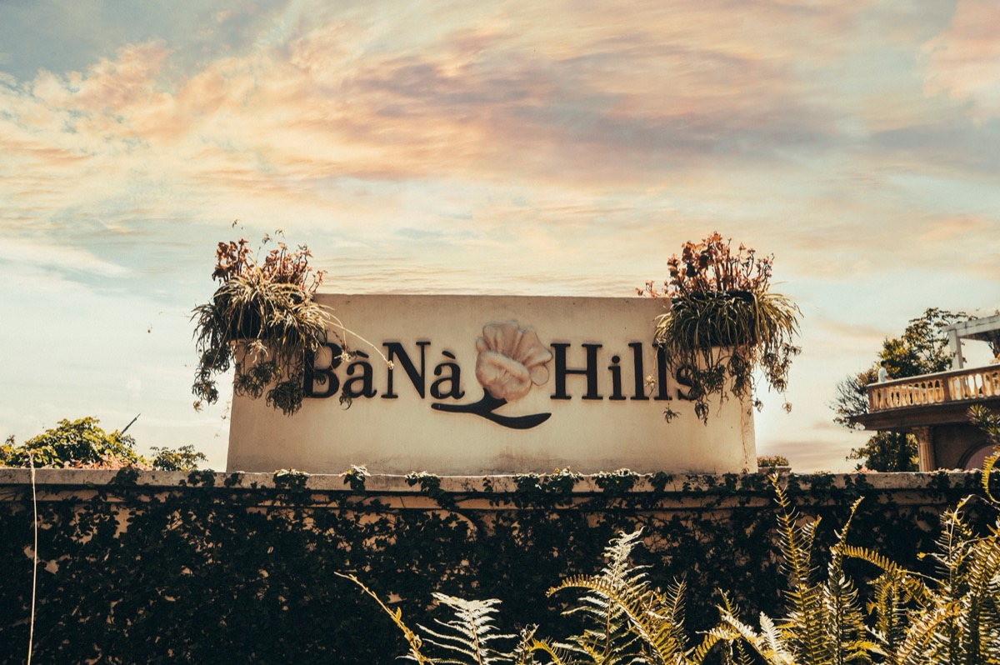

Da Nang is one of the most straightforward cities in Southeast Asia to visit. The airport is three kilometres from the beach.
Grab works everywhere. The food is excellent and cheap.
Most of the main attractions are within an hour of each other. It is genuinely hard to have a terrible time here.
Check prices for your dates in Da Nang
Live rates · Free cancellation on most hotels · Instant confirmation
And yet, specific, avoidable mistakes consistently affect visitor experience. Wrong hotel location.
Wrong time of day at Ba Na Hills. Wrong assumptions about transport pricing.
Ignoring beach flag warnings that exist for real safety reasons. These aren't obscure traps; they're patterns that repeat across thousands of visitor reviews, and every one of them is preventable with about five minutes of advance knowledge.
Here are the fifteen that matter most.
Visiting During Peak Monsoon Without Understanding Swim Conditions
October and November offer cheaper flights and hotels, and many visitors assume "a bit of rain" is manageable. What they don't anticipate is the combination of heavy rain, 2–3 metre swell, strong rip currents, and red flag beach closures that can persist for days at a time.
Travel March–August for reliable beach conditions. If October–November is unavoidable, come prepared for cultural activities rather than beach time, the Marble Mountains, Ba Na Hills, Hoi An, and the Cham Museum are all excellent regardless of weather.
Budget for more café time and indoor meals.
Insider tip: My Khe Beach uses a colour flag system enforced by on-duty lifeguards. Red flag means no swimming, this is not advisory, it's actively enforced.
Yellow flag means swim with caution in the flagged zone only. Tourists who ignore red flags are the primary source of beach rescue incidents at Da Nang.
See our best time to visit guide for month-by-month sea conditions.
Choosing a Hotel Too Far South Without Accounting for Transport
Hotels south of the Marble Mountains area (Non Nuoc, Bai But, further down the coast) often look attractive on price comparison sites. The photos show a beach, the price is low, and the map doesn't make the distance consequences immediately obvious.
For most visitors, stay within the My Khe Beach strip, from roughly the Sheraton in the north to the Marriott in the south. This range gives you beach access, proximity to An Thuong restaurants, and Grab rides to every major attraction that cost under 120,000 VND.
Check our where to stay guide for a precise area map.
Insider tip: Non Nuoc Beach hotels are genuinely fine if you have a motorbike or don't mind Grab costs. The mistake is booking them expecting My Khe proximity and then being surprised by 25-minute, 130,000-VND Grabs to every restaurant.
Know what you're getting before booking.
Not Checking Grab vs Taxi Pricing Before Getting In a Car
Tourists who haven't set up Grab, or whose phone doesn't have data yet, accept offers from drivers at the airport or outside hotels. The drivers appear helpful and quote a price that sounds reasonable to someone who doesn't know the local market.
Set up Grab before you land and buy a local SIM at the airport before exiting arrivals. A Grab from the airport to My Khe Beach costs 60,000–90,000 VND.
Unofficial taxis at the airport routinely quote 250,000–400,000 VND for the same journey. The difference across a week of transport adds up significantly.
See our transport guide for full Grab pricing.
Insider tip: If you use a metered taxi, Mai Linh (green) and Vinasun (white) are the only two companies with reliable meters. Any other company is higher risk.
Better yet, just use Grab, which eliminates the variable entirely.

Ba Na Hills: worth a day trip, but book tickets in advance and go on a weekday.
Booking Ba Na Hills Too Late in the Day
Ba Na Hills is a full-day activity, but visitors often arrive mid-morning or later, don't allow enough time before the site closes, and spend the best part of the afternoon in queues rather than on rides or at the Golden Bridge.
Leave Da Nang by 7:00–7:30am. Ba Na Hills opens at 7:30am, and the first cable car ride with minimal queuing is the biggest operational advantage of early arrival.
The Golden Bridge gets significantly more crowded from 10am onward. Budget the full day, gates close at 9pm but the experience peaks in the morning.
See our Ba Na Hills guide for the optimal route.
Insider tip: Weekday visits are meaningfully better than weekends. Saturday and Sunday bring large domestic tour groups that double queue times at cable cars and ride attractions.
If your schedule allows any flexibility, Tuesday to Thursday are the quietest days year-round.
Ignoring Beach Flag Warnings
Visitors see locals near the water, assume the flags are bureaucratic caution, and swim anyway. The rip currents at My Khe Beach are real, have caused multiple drownings, and are not consistently visible from the shore.
Red flag conditions are assessed by trained lifeguards with direct water experience.
Observe the flag colour before entering the water. Green: safe swimming.
Yellow: swim in the flagged zone with caution. Red: no swimming.
On red flag days, walk the beach, sit at a beachfront café, or use it as the day for Ba Na Hills or Marble Mountains. The water will be swimmable again, it's not worth the risk on a red flag day.
Insider tip: Red flags are most common October through February when swell from the South China Sea is strongest. In June–August the sea is typically flat and green flags dominate.
If you're visiting specifically for beach swimming, plan around the beach season calendar.
Underestimating Humidity and Heat
The forecast says 33°C and visitors from temperate climates treat it like a hot summer day back home. Da Nang's humidity, particularly June through August, means 33°C feels physically closer to 40°C.
Exhaustion, sunburn, and dehydration catch visitors off guard, especially on active days like Ba Na Hills or the Marble Mountains.
Plan strenuous outdoor activities for the early morning, before 10am where possible. Carry water constantly and drink it before you feel thirsty.
Use SPF 50+ sunscreen and reapply every 2 hours. Wear light, breathable clothing, linen and moisture-wicking synthetics over cotton.
Build afternoon air-conditioning time into your day (a long lunch, café work session, or hotel pool).
Insider tip: The Marble Mountains in particular becomes extremely uncomfortable after 10am in high summer, the stone retains heat, the caves are humid, and the stair climbing is demanding. Arrive at 7:30am opening and you'll finish before the worst of it.
Traffic moves fast in Da Nang. Cross at lights, use Grab, and don't assume scooters will stop.
Staying in Hoi An Thinking It's the Beach Base
Hoi An appears heavily in beach holiday photography, and many visitors assume its beaches are equivalent to Da Nang's. They're not.
Hoi An's An Bang and Cua Dai beaches are shorter, more prone to seaweed, and Cua Dai has experienced significant erosion. Staying in Hoi An for beach access means a 4km taxi to a beach that's inferior to one you passed on the way from Da Nang Airport.
Stay in Da Nang if beach time is a priority. Do Hoi An as a day trip (40 minutes, 220,000–300,000 VND Grab one way) or add 2 nights for the cultural immersion and evening atmosphere.
See our Da Nang vs Hoi An guide for a detailed breakdown by traveller type.
Insider tip: Hoi An is genuinely better than Da Nang for cultural experience, food, and atmosphere. The mistake isn't choosing Hoi An, it's choosing Hoi An specifically for beach access and being surprised when My Khe doesn't come with it.
Not Budgeting for Peak Season Hotel Price Increases
Visitors check hotel prices months in advance and see the rates. They return to book closer to the date and find them 40–80% higher.
Da Nang has pronounced peak pricing: December–February (winter sun market) and June–August (domestic summer holiday) see significant rate spikes at all tiers.
Book well in advance for peak windows, especially for Christmas/New Year and Vietnamese National Day (September 2). If travelling in shoulder months (March–May, September), last-minute bookings often yield better prices.
Our hotel price index tracks current rates by tier and month.
Insider tip: March to May is the sweet spot, peak beach weather, minimum crowds, and hotel prices at or near their annual low. This is the local travel industry's open secret that mainstream travel content largely ignores in favour of summer content.
"The most expensive mistake in Da Nang is not the visa error or the overpriced taxi — it's spending your whole trip in an air-conditioned hotel when 20 minutes of local navigation would have unlocked the whole city."
Skipping Son Tra Peninsula
Son Tra doesn't fit neatly into a standard tourist itinerary. It's not a single attraction with an entrance fee, it's a 10km forested peninsula with a winding summit road, jungle views, snorkelling spots, the Lady Buddha pagoda, red-shanked douc langurs, and coastal lookouts.
Without a clear "visit here" framing, many visitors simply skip it.
Rent a motorbike for a morning (120,000–150,000 VND/day) and ride the peninsula circuit. Start early (7am) before the heat builds.
The summit road through the jungle offers some of the best riding in Vietnam. Combine with the Lady Buddha pagoda (free entry) and Bai But or Doc Let beach at the southern tip.
Allow 3–4 hours minimum.
Insider tip: Red-shanked douc langurs, one of the world's most endangered primates, live in the Son Tra forest. Early morning gives the best chance of spotting troops in the trees along the summit road.
Bring binoculars if you have them; they're visible with the naked eye if you go slowly and look up.
Overpacking for Tropical Weather
First-time Southeast Asia visitors pack for contingencies that don't materialise in a tropical beach city. Heavy jackets "just in case," multiple pairs of jeans, formal shoes, and full-sized toiletries add weight and take up checked baggage that incurs airline fees on budget carriers.
Pack for genuine conditions: light clothing you can wash and dry overnight (Da Nang is very humid, quick-dry fabrics are practical), one smart-casual outfit for nicer restaurants, swimwear, flip flops, and one light jacket for heavily air-conditioned spaces. Everything else is available cheaply in Da Nang's markets and clothing shops if you need it.
Insider tip: Temple and pagoda visits require covered shoulders and knees. A lightweight linen shirt and lightweight trousers resolve both the coverage requirement and the heat, pack one of each rather than carrying a separate "temple outfit."
Assuming Everything Is Walkable
Da Nang looks compact on a map. Visitors staying on My Khe Beach assume the Dragon Bridge, the Cham Museum, and the Han River are a short walk away.
They're not, they're 4–6km across the city. The heat and humidity make any distance above 15 minutes on foot genuinely draining in peak season.
Accept that Da Nang requires transport for most sightseeing. Grab is cheap enough that this isn't a hardship, a Grab car from My Khe to the Dragon Bridge costs 50,000–75,000 VND and takes 10 minutes.
Build Grab costs into your daily budget (150,000–300,000 VND for a full sightseeing day) and don't attempt long walks in peak summer heat.
Insider tip: The one genuinely walkable zone in Da Nang is the An Thuong neighbourhood behind My Khe Beach, roughly a 700m×400m grid of cafés, restaurants, and shops that rewards slow exploration on foot. Use this as your walkable base and take transport everywhere else.
Not Checking Hotel Noise Proximity
Booking platforms don't filter for proximity to noise sources. Some My Khe Beach hotels sit adjacent to late-night beach bars, construction sites, or the main coastal road with heavy motorbike traffic until 1–2am.
Reviews mentioning noise are often buried below more numerous positive reviews.
Before confirming any hotel, search the property name + "noise" in Google Maps reviews and on TripAdvisor. Check Google Maps satellite view to identify any adjacent bars, roads, or construction sites.
For beach hotels specifically, ask whether rooms face the ocean or the road, road-facing rooms on the main coastal strip can be significantly louder.
Insider tip: The Dragon Bridge fire-breathing show on Saturday and Sunday nights at 9pm draws significant crowds to the bridge area, hotels within 500m of the bridge get loud on those evenings. If you're staying near the Han River and are a light sleeper, request a room on the far side from the bridge.
Misunderstanding Airport Transfer Pricing
Many hotels offer "airport transfer" services at 200,000–350,000 VND or more. Visitors accept these as the standard rate without knowing that a Grab car covers the same 5km journey for 60,000–90,000 VND.
The airport transfer markup is 2–4x the actual market rate.
Decline the hotel transfer, buy a SIM at the airport arrivals hall (5 minutes, 150,000–200,000 VND), open Grab, and book your own car. You'll save 100,000–250,000 VND on a single journey.
The only scenario where a hotel transfer makes sense is if you're arriving very late at night and want a guaranteed pickup with a named driver. See our full airport guide for arrival-day logistics.
Insider tip: If you're travelling as a group of 3–4 with large luggage, a pre-booked private car (not the hotel's, book directly through a local operator or your hotel's concierge at cost price) can be reasonable. The markup comes specifically from hotels acting as middlemen.
Ignoring Seasonal Price Drops
Travel booking tends to happen either very far in advance (locking in peak prices) or impulsively (missing the shoulder period windows entirely). The March–May shoulder period, objectively Da Nang's best weather-to-price ratio, is underbooked simply because fewer people know to target it.
Target March–May for a first visit: 28–33°C, minimal rain, good sea conditions, and 3–4 star hotels running 30–50% below their December or August peaks. September is another underrated month, transitional weather but low crowds and aggressive hotel pricing before the October rainy season.
Track current pricing with our hotel price index.
Insider tip: Vietnamese public holidays drive domestic tourism spikes that international visitors don't anticipate. National Day (September 2), Liberation Day (April 30), and Tết (January/February) all cause rapid hotel price increases and booking shortages.
Mark these dates before assuming September or April availability is guaranteed.
Relying Only on Social Media Recommendations
Instagram and TikTok Da Nang content heavily over-represents a small number of photogenic spots, the Golden Bridge, the Dragon Bridge at night, a handful of rooftop bars, while almost entirely ignoring the local food scene, the Marble Mountains caves, Son Tra, the Cham Museum, and the texture of daily life in the city that makes it actually interesting to spend time in.
Use social media to identify visual reference points, not to build your itinerary. Supplement with Google Maps reviews in Vietnamese (search for local restaurant names using Vietnamese characters, Google Translate helps), local Facebook groups, and editorially curated guides.
The best mì Quảng in Da Nang has no Instagram presence. The most atmospheric café on An Thuong has 200 Google reviews, not 20,000 followers.
Insider tip: For restaurants specifically, Google Maps reviews with photos attached by Vietnamese-language users are the most reliable signal of quality at local spots. A restaurant with 4.6 stars and 800 reviews in Vietnamese is a far stronger recommendation than one with 4.8 stars and 120 reviews in English from tourists who visited once.

Da Nang Is Easy If You Plan It Right
None of these mistakes require extensive research to avoid, most take a single paragraph of advance reading to sidestep entirely. Da Nang is a city that rewards visitors who arrive with basic logistics sorted: Grab on the phone, a local SIM, a hotel in the right area, and a rough sense of which activities require early starts.
The rest largely takes care of itself.
The city is genuinely forgiving. The food is everywhere and excellent.
The beach is long. The day trips are within easy reach.
Visitors who make the mistakes listed here still typically have a good time, they just leave with a list of things they'd do differently. This guide is that list, delivered before you need it rather than after.
→ First-Time Visitors Guide, the complete pre-trip briefing on visas, areas, food, and what to expect.
→ Where to Stay in Da Nang, area guide with hotel recommendations by budget.
→ Budget Guide, real 2026 daily costs so you don't under-budget.
→ Transport Guide, full Grab pricing, motorbike hire, and airport logistics.
→ Best Time to Visit, month-by-month weather, crowds, and pricing.